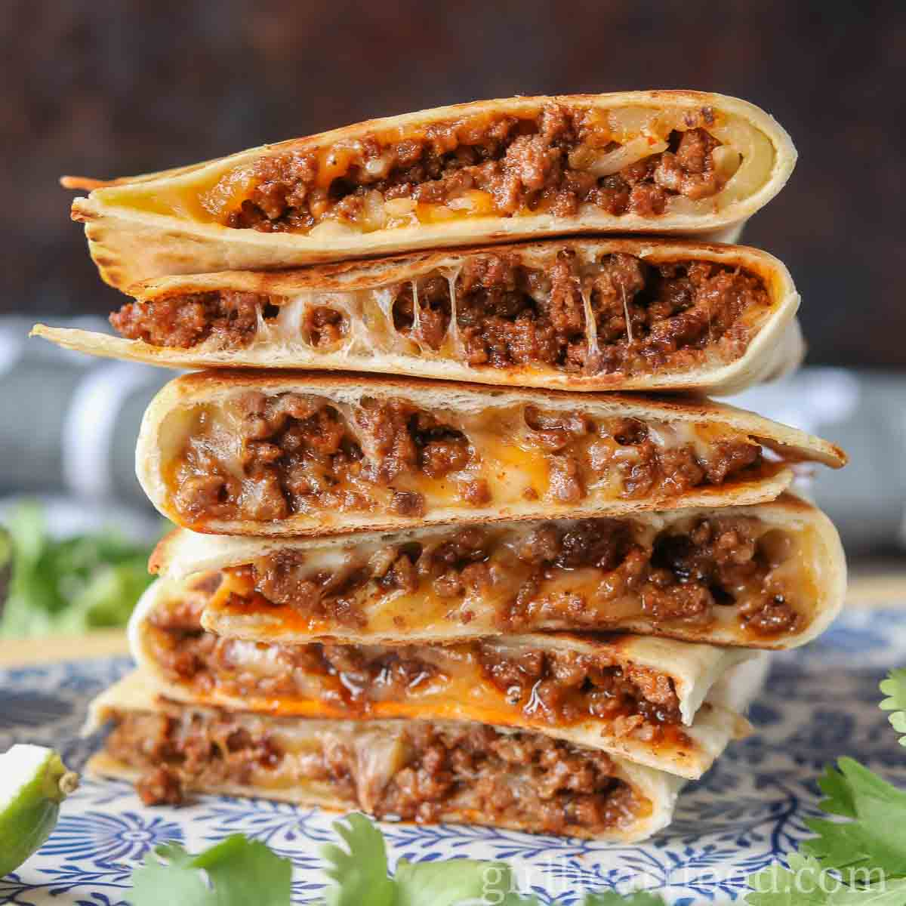

Taco Recipe!

The quesadilla is synonomous with comfort, it's like a grilled cheese but with more possibilities.
Its flaky, gooey, warm and wonderful. Just like all of my readers!
Ingredients
- 1/2 Cup of Shredded Cheese
- 2 Tbsp Butter
- 2 Large Flour Tortillas
Steps
- Warm a 10-inch pan over medium-hight heat
- Drop in a tbsp of butter, moving around the pan til melted
- Lay down the tortilla, dropping in half of your shreded cheese shortly after
- Once cheese has begun to melt slighty, fold the tortilla in half
- Let quesadilla crisp on one side for 3-4 minutes before turning over
- Once the other side has crisped, remove from pan and slice and half
- Plate and enjoy!